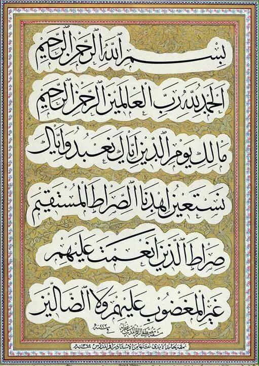
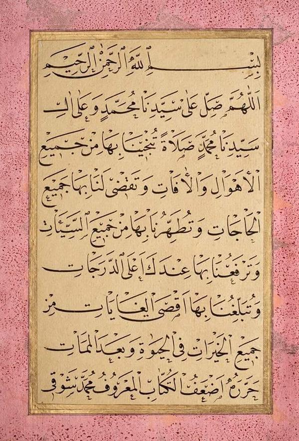
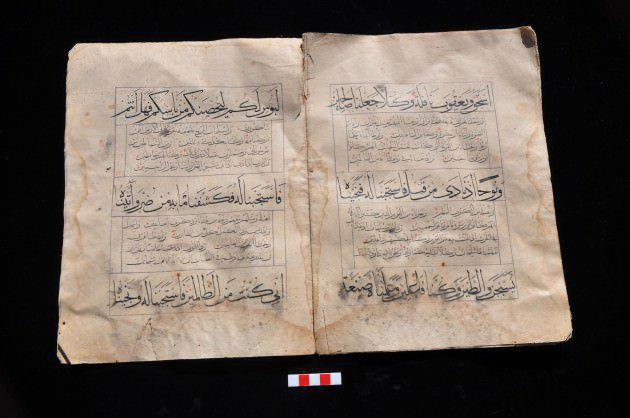
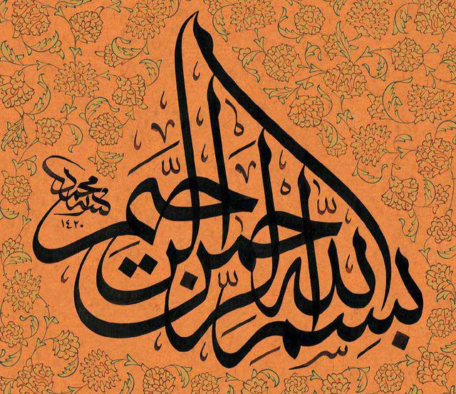
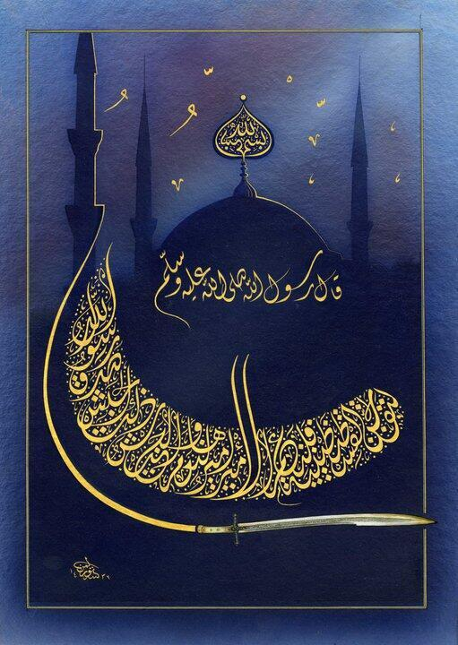
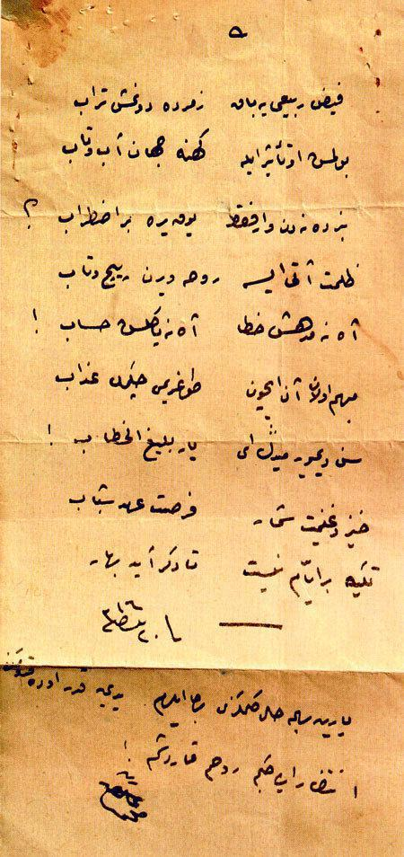
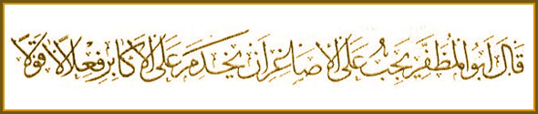

Hz. Ali'nin Kufe'yi merkez olarak seçmesinin ardından Kufe'nin siyasi merkez olmasıyla gelişen bu yazı biçimi köşeli, çetin denilebilecek bir üsluba sahiptir. Bu yazı biçimi İslam coğrafyasındaki en eski yazı biçimidir.

Sülüs, üçte bir demektir. Bu adın nereden geldiğine dair çeşitli rivayetler vardır. Ancak Sülüs ile yazılan bir harfin üçte iki nispetinde düzlük, üçte bir nispetinde de yuvarlaklığı haiz olması bu adın nereden kaynaklandığı hakkında bize bir fikir verebilir. Yumuşak ve tatlı bir görünüme sahip olan sülüs, ümmü'l-hutût (yazıların anası) olarak da adlandırılmıştır. Bu yazı biçimi bilhassa kitap unvanlarının, kıt'aların ve levhaların yazılmasında kullanılmıştır

İslam coğrafyasında genişçe kullanılmış bu yazı türü Sülüs'e çok benzer. Sülüs yazının küçük boyutlarda yazılmışıdır. Nesih, bir şeyi ortadan kaldırmak anlamına gelmektedir. Bu ismin nereden geldiği hakkında muhtelif rivayetler bulunmaktadır. Ancak Nesih'ten önce çok yaygın bir şekilde kullanılan Kufî yazısını revaçtan düşürdüğü, kullanılmasını bıraktırdığı için bu ismin kullanıldığı düşünmektedir. Nesih'in kıvrak ve latif tarzı sebebiyle Kur'an yazımında Kufî yazı terk edilmiş ve Nesih tercih edilir olmuş.>

Yapısına bakıldığında Kufî'den sonra geliştirilen bir yazı izlenimini vermektedir. Yazının boyutu büyükçedir. Bu sebeple de onaltıncı yüzyıldan sonra pek kullanılmamıştır. Yazı giriftlikten uzaktır, harfler ile kelimeler belirgindir. Bu yazı bilhassa Kur'an yazımında kullanılmıştır.

Sülüs'ün kurallarıyla yazılan bir yazıdır. Ancak Sülüs'ten biraz daha küçük ve biraz daha özensiz biçimdedir. Tevkî'nin en belirgin özelliği birleşmeyen harflerin (elif, ra, dal, vav gibi) bu yazı biçiminde birleştirilmesidir. Tevkî, padişah ve halifelerin emri ile çekilen tuğraların adıdır. Bu yazı da genellikle hükümdarların, halifelerin ve vezirlerin yazdıkları mektuplarda kullanılmıştı. Bu yazı biçimi genellikle vakıf işlerinde kullanılmıştır.
Rikâ, Tevkî'nin küçük biçimidir. Bu yazı kısa metinlerin yazımında kullanılmıştır. O sebeple de yazımı seridir. Bu yazı ayrıca Kur'an'ın dua sayfaları ile hocaların talebelerine verdikleri sülüs ve nesih icazetnamelerinde kullanılmıştır. Bu sebeple bu yazıya İcâze ile Hatt-ı İcâze de denilmiştir.
Talik, asma, asılmış demektir. Bu isim harflerin asılmış gibi durmasından gelir. İran'da ortaya çıkan bu yazı biçimi Osmanlı'da Yesârî ile Yesârîzade'nin çabaları ile apayrı bir güzellik kazanmıştır. İnce, mukavves ve narin yapısı harflerle yapılan bir musikidir. Edebi eserlerde ve divanlarda bu yazı kullanılmıştır.

Divanî, İran'da resmi yazışmalarda kullanılan Ta'lik yazının Osmanlı'ya gelip değişiklik göstererek kendine has bir biçim alması ile ortaya çıkmıştır. Divanî, Osmanlı'da resmi yazışmalarda kullanılan harekesiz bir yazı halini almıştır. Harekeli kullanımına ise Celî Divanî denmiştir. Bu iki yazı türü de Türklerin öz icadıdır

Rik'a, Divanî yazı biçiminin boyutlarının küçültülmesi, kavislerinin azaltılması ile ortaya çıkmış bir yazıdır. Osmanlı'da okur-yazar kesimin günlük yazışmalar ve mektuplarda kullandığı Rik'a, on sekizinci yüzyıldan sonra yaygınlık kazanmıştır. Bu yazı biçimine on dokuzuncu yüzyılda kaideler getiren isimler çıkmıştır.

Reyhanî için Muhakkak'ın küçük yazılışı denilebilir. Reyhan çiçeğine benzediği için bu ismi aldığı düşünülmüştür. Sülüs için Nesih ne ise, Muhakkak için de Reyhanî aynı nispettedir. Muhakkak gibi fazla yer kapladığından Nesih karşısında varlığını fazla sürdürememiştir. Muhakkak gibi Reyhanî de Kur'an yazımında kullanılmıştır.